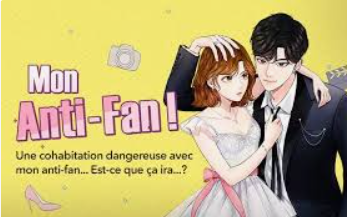
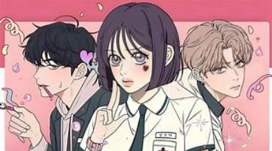
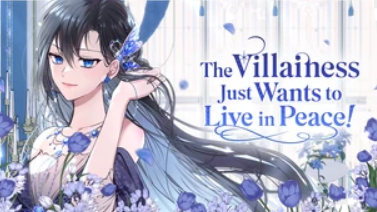
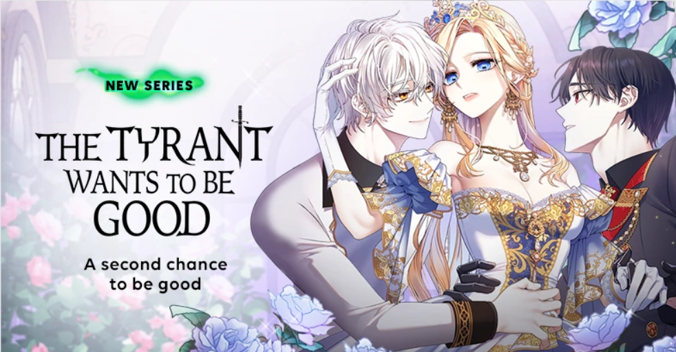

Recommandations de WEBTOON
Tout les WEBTOONS recommandé sont disponible sur le SITE WEBTOON.La plupart sont mes Webtoons préférés.
Mon anti-fan

Genre:
Romance / Comédie / Drame
Résumé:
Whojoon, la plus grande star de K-Pop et son pire anti-fan Geun-Yeong commence
une cohabitation imprévue. Pourront-ils bien s’entendre ?
Mon avis:
La relation entre Geun-Yeong et Whojoon est comme chien chat.On voit Whojoon s'interreser petit a petit à Geun-Yeong .Je trouve ce Webtoon beaucoup trop sous éstimer por un rival to lovers alors qui est trop bien.
Ma note:⭐⭐⭐⭐
Clique ici pour lire
J'ai élevé une bete

Genre:
Romance / Fantasy / Historique
Résumé:
La vie de princesse est un rêve pour certains mais pas pour Blondina, la fille
illégitime de l’empereur qui vient juste d’arriver au palais et qui ne se sent pas
accueillie. Mais heureusement pour elle, un petit chat noir devient son ami, ou du
moins c’est ce qu’elle croyait...
Mon avis:
Ce webtoon est bien. Et la naiveté de Blondina on croyant que c'etait un simple
chat qui se transforme en humain.
Ma note:⭐⭐⭐
Clique ici pour lire
Operation:True Love

Genre:
Romance / School-Life / Drame
Résumé:
En plus de découvrir que son petit copain la trompe avec Lime qu’elle considère
comme sa soeur, Soo-Ae entre aussi en possession d’un portable qui lui permet d’évaluer
la quantité d’amour qu’une personne recevra durant sa vie… Seulement, elle semble être
la seule à avoir 0 chance de recevoir de l’amour un jour… Peut-être que son rapprochement
avec Eunhyeok, le meilleur ami de son copain, va permettre de changer son destin ?
Mon avis:
Malgré que le Webtoon n'est pas fini j'aime beaucoup la relation Soo-Ae et Eunhyeok
dans la partie lycée. Mais pour la partie adulte je la préfère plus avec Dohwa.
Ma note:⭐⭐⭐
Clique ici pour lire
The Villainess Just Wants to Live in Peace!

Genre:
Surnaturel / Fantaisie / Historique
Résumé:
Morte dans un accident d'avion, je me suis retrouvée dans le corps de la vilaine d'un roman, Tanasia. Connaissant sa fin horrible, je comptais vivre gentiment et tranquillement. Malheureusement, Tanasia avait déjà commis de terribles crimes. Vais-je arriver à réparer ses fautes et trouver la paix ?
Mon avis:
J'adore la relation qui se crée entre Tanasia et sa jumelle Roxia.Au début tout le monde ètais térrifier par elle,sa montre que tout le monde a été traumatisé par elle. Surtout Askan on aurait un enfant traumatisé.Bref j'ai hate pour la saison 2.
Ma note:⭐⭐⭐⭐
Clique ici pour lire
The Tyrant Wants to Be Good

Genre:
Romance / Fantaisie / Drame
Résumé:
Le tyran Dorothea Millanaire s'est emparé du trône par la force. Son règne tyrannique s'achève quand ses rares proches la condamnent à mort, mais elle retourne dans le passé. Décidée à ne pas répéter ses erreurs, son seul objectif est de devenir une bonne personne. Or, rien n'est facile avec un père qui l'ignore, un prince héritier collant et une position de princesse sans pouvoir. Et pourquoi son premier amour et son ex-fidèle, qui l'a trahit, la suivent partout ?
Mon avis:
J'adore la façon que Dorothea essaye de se controler et de ne pas etre mechante.Mais par contre leur père je le hais de tout mon coeur, il ne reconnait meme pas sa propre fille c'est une dinguerie mais bon voila.
Ma note:⭐⭐⭐
Clique ici pour lire